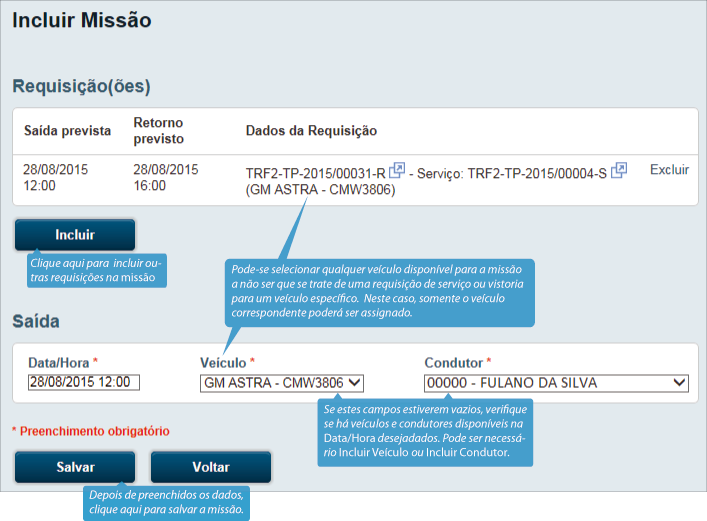
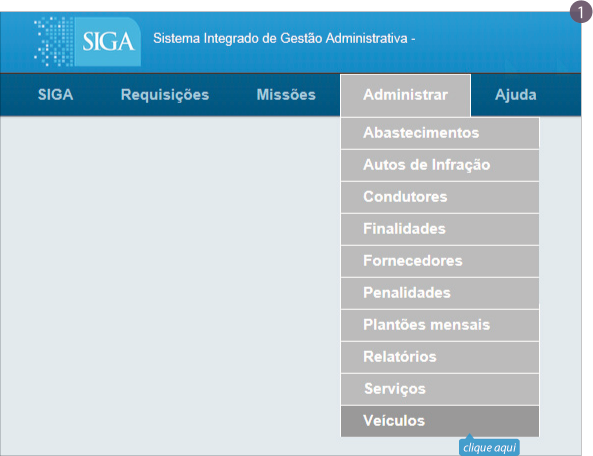

SISTEMA DE TRANSPORTES
Manual
Requisições
A
Alternativamente, esta tela também pode ser acessada através do menu Requisições - Listar:
Visualizar Requisição
A tela Visualizar Requisição exibe detalhes de uma requisição (selecionada na Lista de Requisições). Se o usuário tiver permissão e se a tela não tiver sido aberta em uma nova guia, esta visualização exibe ainda ícones que permitem alterar a requisição, entre outras operações.
Incluir Requisição
a) Podem-se usar dois caminhos diferentes para ara incluir uma nova requisição: através do botão Incluir, na Lista de Requisições, ou através do menu Requisições - Cadastrar.
Editar Requisição
É possível alterar qualquer dado de uma requisição após a criação caso seja necessário. Pode-se acessar a tela Editar Requisição através da lista de requisições ou da tela Visualizar Requisição:
Se necessário, Incluir Finalidade
Aprovar/Rejeitar Requisição
Depois de criada a requisição, ela pode ser aprovada ou rejeitada. Mostramos a seguir o caminho para se rejeitar uma requisição. A tela Autorizar Requisição é semelhante, mas não é obrigatório citar um motivo. É possível autorizar e rejeitar uma requisição tantas vezes quanto necessário, desde que ela ainda não tenha sido programada.
Missões
Na Lista de Missões é possível ver todas as missões e também aplicar filtros para visualizar somente as que se encaixem nas condições desejadas. Para acessá-la, utilize o menu Missões - Listar.
Visualizar Missão
A tela Visualizar Missão exibe detalhes de uma missão selecionada previamente. Se o usuário tiver permissão e se a tela não tiver sido aberta em uma nova guia, esta tela exibe ainda ícones que permitem alterar o andamento da missão, entre outras operações.
Incluir Missão
a.1) Para criar uma nova missão, utilize o botão na tela Lista de Requisições. Observe que apenas usuários autorizados podem efetuar esta operação, e que é possível agrupar várias requisições em uma única missão (bem como é possível criar várias missões para uma única requisição).
a.2) Alternativamente, pode-se utilizar o menu Missões - Cadastrar para incluir uma nova missão:
a.3) Há ainda um terceiro caminho para se criar uma nova missão: através do botão Incluir na tela Lista de Missões.
Ir para item a.2
b) Independente do caminho escolhido, será exibida a tela Incluir Missão. Nela, é possível incluir ou excluir requisições, caso necessário, e se define uma data, veículo e condutor para a missão.
Ir para Incluir Veículo ou Incluir Condutor
Condutores
A tela Condutores exibe uma lista de todos os agentes cadastrados, e permite que se cadastrem novos condutores, ou se editem os dados e mesmo que se exclua um condutor.
Incluir Condutor
1) Dados cadastrais
Esta tela permite a alteração dos dados cadastrais do condutor, e também permite visualizar outras informações importantes. Ela pode ser acessada através da tela Condutores.

Editar Condutor
5) Agenda
O Relatório de Agendamentos por Condutor permite a visualização dos compromissos (escala de trabalho, plantões, missões) do condutor consultado num dado dia. Para maiores informações, observe a Agenda dos Condutores.
6) Infrações
A Relação de Autos de Infração exibe as infrações do condutor consultado. Para cadastrar e editar infrações, consulte a seção Autos de Infração.
Veículos
A tela Relação de Veículos exibe uma lista de todos os veículos cadastrados, e permite que se cadastrem novos veículos, ou se editem os dados e mesmo que se exclua um veículo da base.
Incluir Veículo
Esta tela permite inclusão de um novo veículo. Ela pode ser acessada através da Relação de Veículos.
Consultar Incluir Condutor ou Incluir Fornecedor
Editar Veículo
1) Dados cadastrais
Esta tela permite a alteração dos dados cadastrais do veículo, e também permite visualizar outras informações importantes. Ela pode ser acessada através da tela Veículos.
4) Agenda
O Relatório de Agendamentos por Veículo permite a visualização das missões do veículo consultado num dado dia. Para maiores informações, observe a Agenda dos Veículos.
5) Abastecimentos
A tela de Abastecimentos exibe todos os abastecimentos do veículo consultado. Para incluir novos abastecimentos, consulte a seção Abastecimentos.
6) Infrações
A Relação de Autos de Infração exibe as infrações do veículo consultado. Para cadastrar e editar infrações, consulte a seção Autos de Infração.
Autos de Infração
A Lista de Autos de Infração exibe todas as infrações já cadastradas e permite a inclusão, exclusão e edição de autos de infração.
Abastecimentos
A Lista de Abastecimentos exibe todos os abastecimentos já cadastrados e permite a inclusão, exclusão e edição de abastecimentos.

Finalidades
A Lista de Finalidades exibe todas as finalidades já cadastradas e permite a inclusão, exclusão e edição de finalidades.

Fornecedores
A Lista de Fornecedores exibe todos os fornecedores já cadastrados e permite a inclusão, exclusão e edição de fornecedores.

Serviços
A Lista de Serviços exibe todos os serviços já cadastrados e permite a inclusão, exclusão e edição de fornecedores.